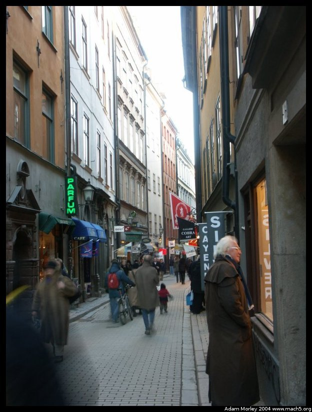

During a long weekend after midterm exams, I traveled to Sweden. I took the train across the Øresund from Copenhagen Airport (København Kastrup Lufthavn) to Malmö, and then connected to an X2000 to Stockholm. I did this for a number of reasons. The first is it's cheaper than riding the X2000 from central Copenhagen (and I was getting on the stop before the bridge), but also because the X2000 sometimes doesn't come across the bridge. Even though it's a high-speed train, sometimes it's late, and waits in Malmö for the passengers to come across on Øresundtoget (the Øresund train, in Danish).
Because I went in March, it was a whole different world of cold from Copenhagen. People say Stockholm is "warm" because of the protection afforded by the mountains of Norway, the coastal location, etc. I'm sure it is warm, for its latitude, but that doesn't mean it's toasty warm in March. Let's just say the wind chill put it below zero at times.
Even though it was cold, the city of Stockholm impressed me. It had all the normal conveniences I expect in a city: mass transit from the airport to the city center, a functional bus and underground subway, plentiful parks, museums, shops, walking streets, pedestrian zones, beautiful buildings, quaint neighborhoods, and so on.
I must admit, however, that I found the transit system to be rather hilarious compared to Copenhagen's transit system. First off, in Denmark, multi-ride cards are punch in a machine on the platform or when boarding a bus, and then checked by conductors. In Sweden, they have multi-ride tickets, but they use a stamp, complete with ink pad. It really gave me a giggle how low tech (but functional) it was.
I will say that the Swedes turned out to be very helpful people, with one ticket agent for the local transit authority drawing me a map to my hotel. Complete with little cartoon stop lights and landmarks. Ole also drew me a similar map to show me where the night bus stopped and how to return home after I got off. Maybe it's a Scandinavian thing.
Stockholm is made up of many islands, so there is always water to be seen. The map below helps to illustrate this point.
There is a good map of Stockholm here, I don't see an English version, but "Gamla Stan" is the old city in the pictures below, "Stockholms C" is the central train station, T-Centralen is the central underground metro station (complete with underground shopping mall and grocery store). I stayed in Stockholm S (south). It is also worth noting that the zoom feature works, so use it!
And on to the pictures. Please remember, these are from March. Quite a few folks asked, "Why is it kind of dreary looking in Scandinavia?" It's because we're still in winter time.
The exterior of the X2000 I rode from Malmö to Stockholm. Peppy.
The interior of the X2000. 1-2 seating. Student ticket discounts rock. The distance between Stockholm and Copenhagen is about 600 km. The trip takes about four and a half hours by train, give or take, so the X2000 is quite cozy. SJ (the Swedish national railway company that operates the X2000) even provides X2000-branded trash bags. Maybe that's why it costs so much more to ride the X2000.
Woosh. Feel the speed. With an average speed of 168km/hr (105mph) and a top speed of 275km/hr (172mph), the scenery flies by at an amazing pace. The entire trip weaves through the Swedish country-side on normal train tracks (not special high speed rail lines as the TGV in France uses), so you go behind people's houses, farms, and so on. It was barely (okay, not even) the beginning of Spring, so the landscape still had a certain magical look to it.
After a bit, the scenery takes on the form of blurry trees for a few hours or so, which made me want to find the eatery. No slouch when it comes to food, the X2000 has the usually high priced (but tasty) train food.
Eventually, I do what I always do: take pictures of the locals when they (usually) don't notice.
I had two different people come and go from the seat in front of me, and one person ride the whole way across the aisle. Notice the woman's lunch sack. It's quite common for people to bring food along for the ride. I myself packed my own sack of food.
Stockholm Central station from the balcony. It's a big place and can be somewhat maze-like at times, but luckily my wanderings led me to a high point.
This is a gas station carved into the side of a mountain near my hostel the first night. I think there was some parking in there too.
This, if I remember correctly, is where King Carl XVI Gustaf lives, at least part of the time. It is Kungliga Slottet, which I think is "The Royal Castle" or "The King's Castle." It is right next to the royal church, and about 3 minutes by foot from Parliament. No long walk down Pennsylvania Ave for the Swedish monarch!
One of the Royal Guard.
Inside the Royal Church. This church is amazing on the inside.
More inside the church. The above photo was taken at f/5.6, ISO 100, 2 seconds. It's not nearly as light in the church as it looks in this photo --- 2 seconds is a long time in camera land. Really, seriously. Looking at these pictures is nothing like what it looked like inside the church, as being there was much darker!
This is the bridge between the Royal Castle and the Parliament. Not very far at all, and no security as is the case in all of Scandinavia. There are no snipers, no barricades, no gaggle of police officers.
The Royal Guard marches and changes and so forth in a timely fashion. Notice the sign in the background, "PARKERING," meaning "PARKING." I once sat on a train (in Denmark) next to a Brit and we discussed the similar, but different, spellings of words in Scandinavia. I said, "Notice that the Danes spell 'parking' wrong." To which he replied, "Not wrong, just different." I didn't have the heart to tell him the reason I said wrong was because most Danes say the English drive on the wrong side of the road. Oh well. Further perpetuating the idea that all Americans are dumb. Oops.

The walking street through the old town of Stockholm. Stockholm is lucky in that it has two major pedestrian zones: the old town, and the (what I would call) new town. The old town has charm and small narrow streets with old cobblestones and no cars, whereas the new town is more contemporary. One benefit I saw in the old town was that it had a fair number of tourists (okay a lot), but didn't seem completely overwhelmed by them. Nobody understood my Danish, but that could've been because in March (only a month and a half into school) my Danish was, well, bad.
The bridge goes directly through the parliament building, and on to what I call the new town, but it's effectively the modern center of Stockholm with the central train station, metro station and so on. Along with the Tourist Center.
Looking back towards the Royal Castle, at Parliament. The sun is setting, hence the warm colors.
The parliament building from down river a bit.
The Royal Library reading room. The building itself on the outside isn't very exciting, but inside it's impressive. Worth a diversion to, even though it is somewhat off the beaten path. I happened upon it purely by chance. Quite full, even later in the evening, which seems atypical for Scandinavia, as most go home to be home in the evening.
Even the stairs are a sight.
One of the many bridges north of the pedestrian zone.
A statue near the bridge above.
I don't put this picture up because of the scenery, but rather because of what is in the foreground. Those sheets on the water --- those are ice. It was ungodly cold at night.
Yes, that really is ice. And yes, it really was that cold. Exciting!
There are a lot of narrow streets with lonely looking people on them in the early morning.
Yes, that's ice. Yes, those are people walking on the ice. Yes, there is water under the ice (you can see it in some spots). The path across the ice was the fastest way between an art museum and the technology museum.
Looking back towards the Nordic Museum from Skansen open air museum. Open air museums are quite common (or so it seems to me) in Scandinavia (there is one in Stockholm, Skansen, one north of Copenhagen, and one in Århus, all of which I visited). Most have original buildings from the past, and people dressed like they are from the time period, which is usually the 19th century or earlier. Looking back, I liked the one north of Copenhagen the best, but probably because it was warm and sunny when I went.
In the entryway of the Nordic Museum, there is this statue. I rather like it.
I know, the second one is too personal. The first one is far better. It's the food court (duh).
The main hall of Nordiska Museet (The Nordic Museum). The museum is worth visiting for the building alone. The stuff inside is icing on the cake.
The National Museum, which houses paintings and other works of art, including
the famous urinal as art piece. The vertical of this is much better, from a composition standpoint, but I got a little shaky when taking it.
This is where I stayed the second night, the Hotel Anno 1647. Built in 1647 (you do know Latin, yes?) as a rich merchant's house, it survives today as a fancy hotel with cheap (for Scandinavia) single rooms above the bar. The breakfast is wonderful. Oh man, I'd fly back there for the breakfast. Minus the orange juicer that no one could get to work. It was great watching people come down and attempt to make fresh squeezed juice and eventually give up. It was even better when there were two people together who were chattering in a foreign language, while trying to figure out how to work the pesky juicer.
Cheap means small. I took another picture straight on, but let's just say the room stops.
The underground. Quick, efficient and fun fun fun!
I don't know whether Stockholm has an underground mall because it's cold or because it's a good idea, but either way, the mall is right next to the T-Centralen station, so you can buy buy buy and shop shop shop til you drop drop drop. There is even a wonderful grocery store, where they didn't allow pictures. Which is too bad, because it's the best underground grocery store I've ever seen.
The underground mall, the transition to the public pedestrian zone, and the mall "entrance" from the sunken plaza.
The entrance to the underground. In Copenhagen, there are no turnstiles to get into the trains --- it's free access with checks on the train itself. In Stockholm, there are short gates. In Paris, there are huge gates you can't jump over (Well, shouldn't be able to. I've now heard stories of Olympic Parisians who hurdle six foot high gates). Stockholm probably likes to think people are honest and don't jump the gate, but they do. And the police, who are standing right there, don't seem to notice, or care. Right before I took this picture, two men hopped the turnstiles. The little green thing with the globe above it distributes the "Metro" paper, which I've seen in many, many European cities (Paris, Copenhagen, Stockholm, to name a few).

The descent to the Metro. I am glad I took this, as I am still kicking myself for not breaking the "no photos" rule in Russia and getting one of going down into the Metro in St. Petersburg. You'll find out why in my Russia pages.
Inside the Metro.
Gamla Stan (the old town) at night.
In a tea shop in Gamla Stan. The second proof that Swedish hot chocolate is not as good as Danish. (The first was in the old town, where I found a good waffle but lacking hot chocolate)
Waiting for the metro, and riding the bus on the last day.
Yes, when I say cold, I mean cold!
The ice is thick. Sort of.
I visited the Swedish Technology Museum. There was a 13 horsepower steam engine (the size of a small house),
a fuel cell exhibit where a tiny fuel cell powered a fan,
and an exhibit on vacuum cleaners. They showed each and every assembly step, and even had the Trilobyte on display. The Trilobyte is a robotic vacuum cleaner that cleans your home automatically, avoids furniture and stairs, and even returns to it's cradle to charge itself. So cool. The Swedish company Electrolux makes the Trilobyte by hand and rotates it's work staff across the product line to prevent repetitive stress injuries. This is probably one of the reasons the unit costs so much. But nobody gets hurt.
I spent my last few hours at the Wasa, an old sailing ship Sweden built when it was still a major naval power. The designers, however, put too little of the ship below the water and used too little ballast, so it sank before it got very far out of the harbor. Fast forward a few hundred years. A massive project lifted the almost intact Wasa off the sea floor, and restored it over a period of many months to how it looks today. It is an amazing sight, even if it is also very dark inside! By very dark, I mean that the above picture was taken at f/5.6 and 30 seconds.
The Wasa wasn't always boring brown --- it was painted in a colorful style to be both imposing and impressive.
Some more exterior pictures of the Wasa.
An artist's rendition of the Wasa sinking.
The reason for the sinking: not enough ballast, too much above water. Remember, the center of gravity is your friend. It is rather embarrassing to watch the new prized fighting ship sink because of bad design.

The stern of the ship (the back of the boat). The preservation of the details is flat out amazing.
The side view of the ship. Please note that almost all of it is original. The rigging (ropes) and the planks are not.
Waiting on the platform for a metro. Note the pointy shoes, the military man, the old folks in fur or down, and the young trendy types.
People and advertising.

The Central Station in Stockholm. The journey is coming to an end.
The signs for the underground metro.
A picture through a circular hole in the floor in the station.
So ends the Stockholm journey. I boarded a late X2000 back to Copenhagen. I am quite the fan of Stockholm now, minus the cold. Stockholm is more mixed ethnically than Copenhagen is. Not as homey as Copenhagen, but still an impressive European city worth a trip.
Adam can be reached at adam dot morley at gmail dot com